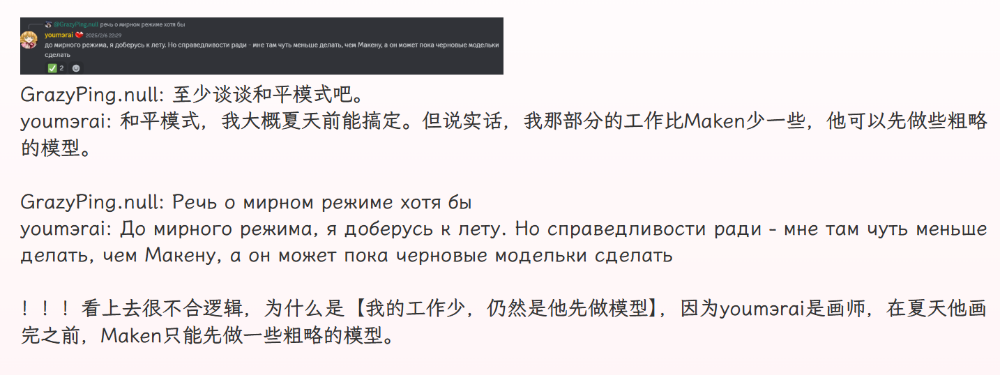
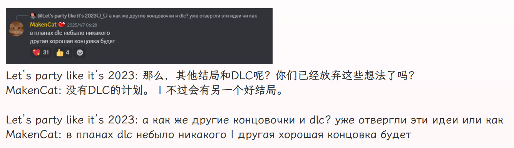

关于和平模式你需要知道的
MakenCat: 没有dlc的计划，会有一个好结局。 - - - - - - - - - - - - - -

- - - - - - - - - - - - - - 本贴集中了所有关于和平模式和好结局的相关信息，每层楼中的信息列举按时间顺序进行。 - - - - - - - - - - - - - - Ca清（id：T_gas）翻译该文并且编辑此贴发布且保持贴子更新 本贴是2025.3.15版 本贴在百度贴吧——米塔吧首发且保持最新 本贴为所有吧友提供信息支持 转载要求注明来源及编者，编者保留该帖一切权利
---- 发布时间 - - - - 26年上半年；好结局会随着和平模式一并发布； 
---- 和平模式主题 - - - - 与疯狂米塔的生活模拟；与游戏主流程相同的3D构建；
---- 和平模式内容 - - - - 更多的小游戏；对《太空机器人》的致敬；进度推进较为灵活，可玩性高；有随机性的、可储存的个性内容；
---- 和平模式流程 - - - - 会有一个结局；主角是疯狂米塔；会有原角色的复用； p.s.到底会不会添加新的米塔，大概率是不会，但仍在摇摆中，不过，疯狂米塔显然是设计的主角。
---- 好结局确认 - - - - 善良米塔视角的dlc计划被取消，会有个好结局； p.s.好结局的视角尚未确定，毕竟玩家1已经变成了卡带。 
---- 好结局内容 - - - - 米塔们的遇害或许会被避免；时间线尚未确定；
本贴是2025.3.15版
历史版（累计有阅读数：0、点赞数：0、回复数：0）：